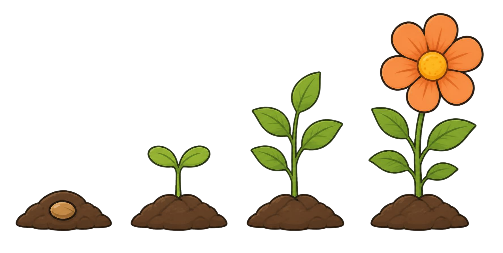

Name:
Datum:
Lösung
Wie spät ist es?
Ich kann volle und halbe Stunden ablesen.
Zu 1: Erst der kleine Zeiger. Er zeigt die Stunde.
1
Lies ab. Schreibe die Uhrzeit auf.
2
Zeichne die Zeiger ein.
9 Uhr
halb 5
halb 9
halb 12
3
Eine Stunde später. Wie spät ist es dann?
3 Uhr →
8 Uhr →
11 Uhr →
halb 2 →
halb 6 →
halb 10 →
5 Uhr →
halb 4 →
12 Uhr →
halb 12 →
Lösung
4
Was passt zusammen? Verbinde.
5
Willi sagt: „Um halb 8 gehe ich in die Schule.“ Was machst du um halb 8? Schreibe.
Eigene Antwort, zum Beispiel: Um halb 8 gehe ich zur Schule.
6
Eine halbe Stunde später. Wie spät ist es dann?
2 Uhr →
6 Uhr →
9 Uhr →
11 Uhr →
halb 4 →
halb 9 →
7 Uhr →
halb 1 →
★
Wer mag, knobelt: Der große Zeiger steht auf der 6, der kleine zwischen 2 und 3. Wie spät ist es?
Es ist
.
Ich kann volle und halbe Stunden ablesen.
So gut kann ich das schon. Kreuze an:

Was hat dir geholfen?
das Beispiel
Willis Tipp
ein anderes Kind